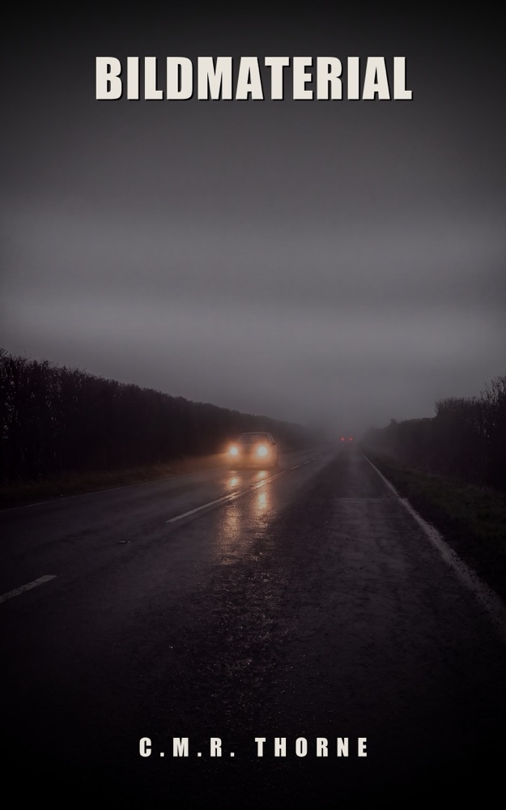

LOWLANDSPRESS
LOWLANDSPRESS

Bildmaterial
Ein Thriller
Ein alter Dashcam-Clip beweist: Die Ermittlungen zum Tod von Niek Veldkamp beruhen auf der falschen Uhrzeit.
Wo erhältlich
Marten Groenewoud hat in fünfundzwanzig Jahren vierzehnhundert Menschen in seinem Dorf das Autofahren beigebracht. Er weiß von jedem, wie er bremst, wohin er schaut und wohin nicht. Als eine Anwältin ihn beauftragt, altes Dashcam-Material von der Kreuzung zusammenzutragen, an der im Juni ein fünfzehnjähriges Mädchen erfasst wurde, ist das nur ein Auftrag. Ein Stapel Clips, ein Formular, eine Unterschrift darunter.
In diesem Stapel steckt ein Clip, der seit acht Jahren öffentlich in der Dorfgruppe steht. Vierhundert Menschen haben ihn gesehen. Sie haben gelacht und weitergescrollt, denn da fährt bloß einer ohne Licht. Niemand hat je auf das geachtet, was im Hintergrund des Bildes hängt. Es beweist: Die Ermittlungen zum Tod von Niek Veldkamp beruhen auf der falschen Uhrzeit.
„Es ist nichts passiert“ ist ein Satz, den man nur sagt, wenn etwas passiert ist.
Produktdetails
- Verlag
- Lowlands Press
- Sprache
- Deutsch
- Seiten (Taschenbuch)
- 475
- Seiten (Hardcover)
- 358
- Wörter
- 99.129
- ISBN (Taschenbuch)
- 979-8161835258
Der Anfang
Der Anfang des Buches, dieselben Seiten, die ein Shop zum Hineinlesen zeigt. Weiterlesen bei den Händlern oben.
Prolog
DASH_20211113_004037.MP4 Länge 00:01:03 1920x1080 29,97 fps Audio AN GPS keine Daten geteilt in: Oosterwissel Rijdt Mee (412 Mitglieder) 13-11-2021 08:52 40 Daumen hoch
Das Bild beginnt zu tief und zu breit. Unten sitzt ein Stück Armaturenbrett, das nichts zur Sache tut.
Nasse Landstraße. Scheibenwischer auf zwei. Links der Bankettstreifen, rechts der Graben, und in der Ferne das orangefarbene Glimmen eines Dorfes, in dem um diese Zeit schon fast alle Lichter aus sind. Oben rechts steht die Zeit eingebrannt, weiß auf schwarz, wie das Werk sie eingestellt hat und wie sie nie jemand geändert hat: 00:40:37 13-11-2021.
Es gibt keinen Anlauf. Die Scheinwerfer sind schon da.
Sie stehen zu weit links. Sie bleiben zu weit links. Die Kamera sieht sie wachsen, und binnen einer Sekunde ist da ein heller hoher Transporter ohne Seitenlicht, der die Mittellinie nimmt, als gehörte sie ihm, und dann reißt das Fahrzeug, in dem die Kamera sitzt, nach rechts, das Bild kippt, das Bankett kommt hoch, Gras, ein Leitpfosten, und das Geräusch eines Mannes, der erschrickt. Ein Laut, kurz.
Dann steht es still.
Fünfunddreißig Sekunden lang passiert nichts außer einem Mann, der flucht. Er flucht in eine Windschutzscheibe hinein. Er nennt den Transporter Dinge, die mit Transportern nichts zu tun haben. In seiner Stimme ist keine Angst, nur die Erleichterung, die wie Wut aussieht, und irgendwo in der Mitte sagt er zu sich selbst, leiser, als schriebe er es auf: dass er das hier hatte. Dass er das hier Gott sei Dank hatte.
Er meint die Kamera.
Bei Sekunde vierzig fährt er weiter. Das Bild richtet sich auf, die Wischer laufen wieder an, der Asphalt wird wieder ein Streifen, der unter der Motorhaube verschwindet. Es gibt keinen Gegenverkehr mehr. Es gibt nichts mehr.
In den letzten elf Sekunden kriecht die Straße aus dem Polder in einen Dorfrand hinein. Links schiebt sich ein Parkplatz vorbei, ein flaches Gebäude, ein Wartehäuschen ohne Menschen, und dahinter ein Streifen Kies mit einer Reihe Metallpfosten darauf, acht Stück, in ordentlichem Abstand, jeder mit einem kleinen Licht, das im Regen zu einem Fleck ausläuft.
Am vierten Pfosten hängt ein Kabel.
Kapitel 1
Der Junge hieß Sem, und er saß im Auto, wie sie beim ersten Mal alle darin sitzen: zu dicht am Lenkrad, die Schultern bis unter die Ohren hochgezogen, als könnte das Ding jeden Moment zubeißen.
„Sitz“, sagte Marten.
„Was ist mit dem Sitz?“
„Der ist für jemanden mit eins sechzig eingestellt. Schieb ihn zurück, bis dein Knie noch einen Knick hat, wenn du die Kupplung durchtrittst.“
Sem suchte den Hebel mit der Hand, fand ihn nicht, sah nach unten, fand ihn doch, und schob so weit zurück, dass er die Pedale kaum noch erreichte. Marten ließ ihn das drei Sekunden spüren.
„Ein Stück zurück.“
„So?“
„Tritt die Kupplung mal ganz durch. Ganz. Bis es nicht mehr geht.“ Marten sah auf das Bein. „Jetzt ist dein Knie gestreckt. Wenn du ausweichen musst, drückst du dich in die Lehne, statt das Auto zu lenken. Zwei Rasten nach vorn.“
Es war Viertel nach acht an einem Montagmorgen im September. Es regnete nicht, aber es hatte geregnet, und der Zuivelweg lag nass und leer da. Gegenüber auf dem Parkplatz standen drei Lieferwagen mit der Schnauze gegen die Hecke, wie sie dort jeden Morgen standen, und weiter weg drehte ein Traktor mit einem gelben Rundumlicht, das niemand brauchte.
„Spiegel“, sagte Marten. „Innenspiegel zuerst. Was willst du darin sehen?“
„Die Heckscheibe.“
„Ganz. Nicht deinen eigenen Kopf, nicht die Hutablage. Die ganze Scheibe, und du sollst dich dafür nicht bewegen müssen.“ Er wartete, bis es stimmte. „Außenspiegel. Die meisten stellen die zu weit nach innen, dann sehen sie ihr eigenes Auto, und das fühlt sich sicher an. Dreh ihn nach außen, bis du deine eigene Stoßstange gerade nicht mehr siehst.“
„Dann sehe ich nichts mehr von mir.“
„Wo du selber bist, weißt du schon.“
Sie fuhren vom Hof, über den Kreisverkehr und hinaus ins Gewerbegebiet, wo die Laternen nummeriert waren und wo an einem Montagmorgen niemand hinkam. Sem machte es nicht schlecht. Er machte, was sie alle machen: Er fuhr zu dem Punkt, an dem er war, statt zu dem Punkt, an dem er sein würde.
„Wohin schaust du?“
„Auf die Straße.“
„Du schaust auf die Motorhaube. Schau ans Ende der Straße, dann kommt die Motorhaube von selbst.“
„Aber dann sehe ich nicht, ob ich gerade fahre.“
„Ob du gerade fährst, fühlst du. Geschaut wird dahin, wo du hinwillst.“ Marten zeigte mit zwei Fingern in die Ferne. „Das gilt nicht nur fürs Auto. Gehen funktioniert genauso. Wenn du durch eine Tür gehst, schaust du nicht auf deine Füße.“
In der dritten Kurve ging es schief, so wie es immer irgendwo schiefgeht. Aus einer Einfahrt schob sich ein Lieferwagen zu weit vor, und Sem trat alles gleichzeitig durch: Bremse, Kupplung, und eine Lenkbewegung, die er nicht brauchte. Das Auto stand quer, die Schnauze anderthalb Meter von der Fahrertür des Transporters. Der Fahrer hob entschuldigend eine Hand und fuhr weiter.
Sem atmete schnell. Seine Hände lagen noch am Lenkrad, und seine Ellbogen zitterten.
„So“, sagte Marten.
„Entschuldigung.“
„Wofür?“
„Ich dachte, ich treffe ihn.“
„Das dachte ich auch.“ Marten sah in den Außenspiegel, sah, dass hinter ihnen nichts kam, und ließ ihn stehen, wo er stand. „Aber es ist nichts passiert.“
„Es hätte ja was passieren können.“
„Das ist etwas anderes. Das sagen Leute, wenn sie wollen, dass ein Beinahe-Unfall doch ein Unfall ist.“ Marten zeigte auf die Stelle, wo der Transporter gewesen war. „Schau. Du hast bei dreißig gebremst. Nasse Fahrbahn, kalte Reifen, kein ABS-Eingriff, denn deine Räder haben nicht blockiert, sonst hättest du es gehört. Nach zwölf Metern hast du gestanden. Er hätte noch zwei gebraucht, um seine Schnauze freizubekommen. Da war Platz. Da war sogar viel Platz.“
„Es hat sich nicht nach viel Platz angefühlt.“
„Nein“, sagte Marten. Er sah in den Spiegel. „Darum messe ich.“
Er ließ ihn wieder anfahren. Er ließ ihn das ganze Stück bis zur Brücke fahren, ohne etwas zu sagen, denn nach so einem Moment wirkt nichts so gut wie drei Minuten Stille.
An der Brücke parkten sie. Sem zog die Handbremse mit beiden Händen an, was lächerlich aussah, und Marten sagte nichts dazu.
„Aussteigen“, sagte er. „Wir gehen einmal rum.“
„Um das Auto?“
„Um das Auto.“
Das machte er in jeder ersten Stunde, seit fünfundzwanzig Jahren, und in jeder ersten Stunde fand der Schüler es sinnlos, bis er auf halbem Weg war.
„Erzähl mir, was du siehst.“
„Ein Auto.“
„Ja. Was noch.“
Sem ging um die Motorhaube herum. „Es ist nass. Auf dem Schweller ist Dreck.“
„Wo kommt der Dreck her?“
„Von der Straße?“
„Von den Banketten, die sie letzte Woche gemäht haben. Was weißt du jetzt also über dieses Stück Straße?“
Der Junge dachte nach, und es dauerte lange genug, um echt zu sein. „Dass es glatt sein kann?“
„Dass es glatt sein kann, wo du es nicht siehst. Weiter.“ Marten ging nach hinten. „Wo steht die Sonne?“
„Hinter uns.“
„Und wenn wir gleich zurückfahren?“
„Dann in meinen Augen.“
„Dann in deinen Augen, und im September steht die Sonne um halb zehn genau auf der Höhe, auf der deine Sonnenblende nichts bringt. Dann kneifst du die Augen zusammen, und dann verlierst du die Hälfte deiner Sicht zur Seite, und du merkst es nicht, weil es sich mit zusammengekniffenen Augen anfühlt, als würdest du besser sehen.“ Er klopfte auf die Heckklappe. „Und wenn hier jetzt ein Lastwagen stünde, wo würde der dich nicht sehen?“
Sem stellte sich dorthin, wo er die Antwort vermutete, und das waren zwei Meter daneben, und Marten schob ihn mit einer Hand auf der Schulter zurecht.
„Hier. Und das ist die einzige Stelle, an der du an einer Kreuzung wirklich stehst.“
Sie stiegen wieder ein. Marten fuhr selbst zurück zum Hof und ließ Sem berichten, was in der Stunde passiert war, denn so fing er bei allen an, damit sie nach drei Monaten sagen konnten, warum etwas gut lief, und nicht nur, dass es sich gut angefühlt hatte.
Sems Mutter fuhr auf den Parkplatz, ohne zu blinken. Als der Junge die Tür hinter sich zugezogen hatte, fing Martens Telefon in der Türablage an zu vibrieren. Er ließ es ausklingeln, sah dem Auto nach, bis es um den Kreisverkehr war, und rief dann zurück.
„Groenewoud“, sagte Bakhuis. „Hast du einen Stift?“
„Ich habe ein Telefon.“
„Ja, ja. Gut.“ Bakhuis war Schadensachbearbeiter bei einem der beiden Versicherer, die Marten beauftragten, und er redete immer, als hätte er noch vier Leute in der Warteschleife, was vermutlich stimmte. „Ich habe mal was anderes. Keine Einzelrekonstruktion. Ein Muster.“
„Erklär mal.“
„Wir haben eine Schadenersatzforderung von einer Familie. Tochter, fünfzehn, mit dem Rad erfasst, bleibender Schaden am Bein. Um die Verletzung geht es bei uns nicht, das ist die Haftpflicht der Gegenseite, aber der Anwalt der Familie geht gegen den Straßenbaulastträger vor. Mangelhafte Gestaltung. Unübersichtlich. Die sagen: Das war kein Unfall, das war Warten, bis es einmal passiert.“
„Und ihr wollt wissen, ob das stimmt.“
„Wir wollen wissen, ob es ein Muster gibt. Alles, was an dieser Kreuzung jemals festgehalten wurde. Polizeieinträge, Schadenmeldungen von uns und von den anderen, Meldungen an die Gemeinde, Beschwerden, Beinahe-Unfälle, wenn du die findest. Und Bildmaterial.“
„Bildmaterial von einer Kreuzung in einem Dorf.“
„Dashcams“, sagte Bakhuis. „Jeder hat eine. Da gibt es so eine Gruppe, in die sie das alles reinwerfen, ich habe nachgefragt. Wer da ordentlich fragt, kriegt einen Berg.“ Am anderen Ende raschelte Papier. „Du bist von dort, du wohnst da, und du hast einen Stapel, den sonst keiner hat. Wie vielen Leuten hast du inzwischen Fahrstunden gegeben?“
„Vierzehnhundert.“
„Eben. Bei dir machen die auf.“
Marten sah zur Brücke. Eine Frau fuhr mit zwei Kisten vorne auf dem Rad darüber, freihändig, was auf dieser Brücke keine gute Idee war und was sie vermutlich seit dreißig Jahren so machte.
„Zu welchem Satz?“
„Wie immer, plus Stunden für die Sammlung. Höchstens vierzig, und wenn du drübergehst, will ich es hören, bevor du drüber bist.“
„Das ist knapp für alles, was jemals festgehalten wurde.“
„Deshalb rufe ich dich an und kein Büro aus Amsterdam.“ Bakhuis schob etwas beiseite. „Und Groenewoud: Das wird eine Akte, die ein Richter liest. Alles datiert, alles rückverfolgbar, nichts, was du selbst zurechtgeschnitten hast.“
„Das mache ich nie.“
„Weiß ich. Ich sage es trotzdem.“
Marten nahm das Klemmbrett von der Rückbank, denn so etwas schrieb er auf Papier, immer, und setzte das Datum darüber. Montag, dritter September. Er dachte an die Mädchen des Herbstjahrgangs, die er am Nachmittag hatte, an den Ofen im Schulungsraum, der seit Mai nicht mehr ging, und daran, dass eine Musteruntersuchung ihm vermutlich sechs Wochen Arbeit brachte, in einem Monat, in dem ihm das gut passte.
„Gib mir den Ort“, sagte er.
„Moment.“ Bakhuis klickte etwas weg. „Außenbereich Oosterwissel. Kreuzung der Landstraße mit dem, warte, wie schreibt man das. Wisseldijk.“